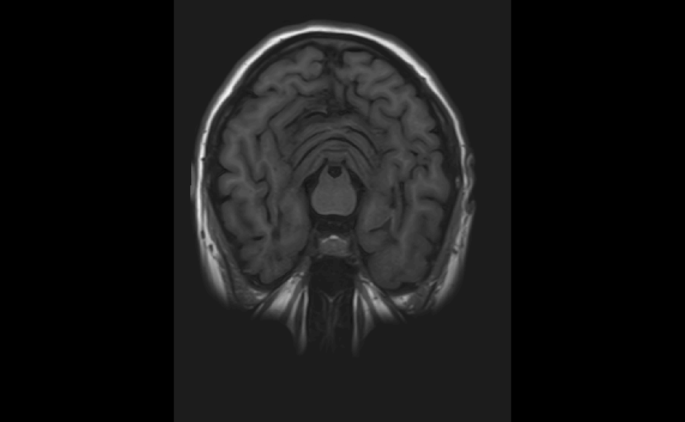
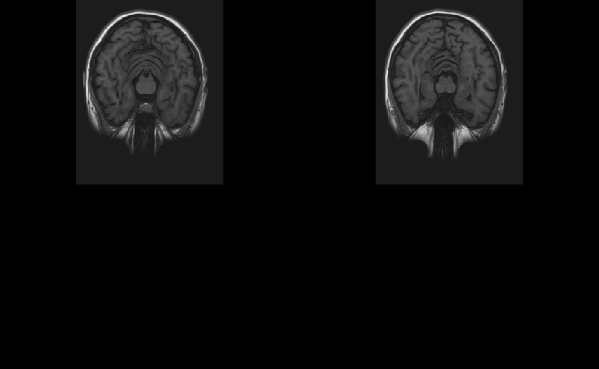
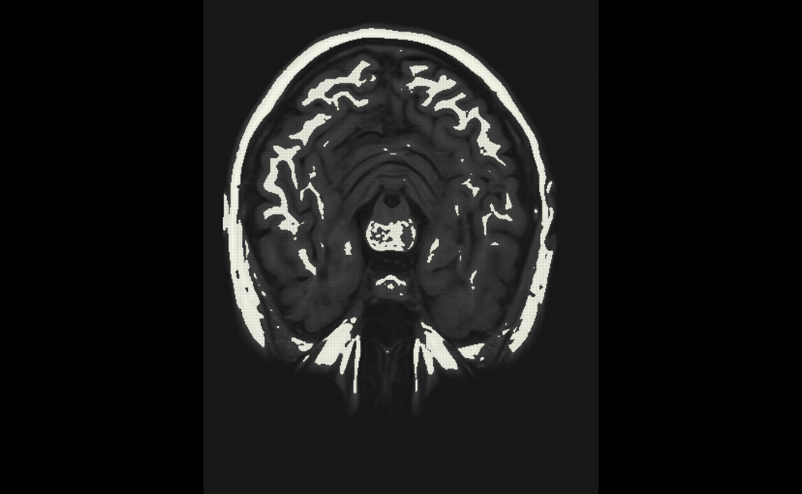

library(neurobase) #> Loading required package: oro.nifti #> oro.nifti 0.10.3
The nifti object
Note: Throughout this post, I will refer to an image on hard disk as a NIfTI, which is a file that generally has the extension “.nii” or “.nii.gz”. I will refer to the object in R as a nifti (note the change of font and case).
In this tutorial we will discuss the basics of reading the nifti object in R. There are many objects in R that represent imaging data. The Neuroconductor project chose the nifti object from the oro.nifti package as one of the the basic building blocks because it has been widely used in other packages, has been tested over a period of time, and inherits the properties of an array in R.
Downloading an Image
Let’s say you have a T1-weighted NIfTI on your machine. If you do not, we can download one. We are downloading this to a temporary file since we don’t need it after the session is over:
t1_file = tempfile(fileext = ".nii.gz") url = paste0("https://johnmuschelli.com/", "open_ms_data/", "cross_sectional/", "raw/patient01/T1W.nii.gz") download.file(url, destfile = t1_file) t1_file #> [1] "/var/folders/1s/wrtqcpxn685_zk570bnx9_rr0000gr/T//RtmphUmrGC/file88b826e76dd2.nii.gz"
Reading in an image
Here we will use the readnii function to read in the image to an object called img:
library(neurobase) img = readnii(t1_file) img #> NIfTI-1 format #> Type : nifti #> Data Type : 4 (INT16) #> Bits per Pixel : 16 #> Slice Code : 0 (Unknown) #> Intent Code : 0 (None) #> Qform Code : 2 (Aligned_Anat) #> Sform Code : 1 (Scanner_Anat) #> Dimension : 408 x 512 x 152 #> Pixel Dimension : 0.43 x 0.43 x 0.82 #> Voxel Units : mm #> Time Units : Unknown
We see the output is a nifti object. We can think of this as an array with additional information (called a header). We can do simple operations on the image, such as sum:
Writing Images
Let’s say we want to set all values greater than 1000 to 1000 and then write the image out. We will use the writenii function. We will copy img to img2 because we want to keep img as is. Again we will write the image to a temporary file because we don’t need this after the session:
img2 = img img2[ img2 > 1000] = 1000 outfile = tempfile(fileext = ".nii.gz") writenii(img2, outfile) file.exists(outfile) #> [1] TRUE
Operations of nifti objects
Although the nifti object is not a standard R object, you can perform standard operations on these objects, such as addition/subtraction and logic. This is referred to “overloaded” operators.
Logical operators
For example, if we want to create a nifti object with binary values, where the values are TRUE if the values in img are greater than 0, we can simply write:
above_zero = img > 0 class(above_zero) #> [1] "nifti" #> attr(,"package") #> [1] "oro.nifti" img_data(above_zero)[1] #> [1] FALSE
We will refer to binary images/nifti objects as “masks”.
We can combine multiple operators, such as creating a binary mask for value greater than 0 and less than 2.
class(img > 0 & img < 2) #> [1] "nifti" #> attr(,"package") #> [1] "oro.nifti"
Visualization of nifti objects
Orthographic view
The neurobase::ortho2 function expands the oro.nifti::orthographic function for displaying nifti objects in 3 different planes:
neurobase::ortho2(img)

We see that in ortho2 there are annotations of the orientation of the image. Again, if the image was not reoriented, then these many not be correct. You can turn these off with the add.orient argument:
neurobase::ortho2(img, add.orient = FALSE)

Single slice view
We may want to view a single slice of an image. The oro.nifti::slice function can be used here.
oro.nifti::slice(img, z = 45)

We can also get a view of multiple slices:

Different Planes
We can specify z the same way but change the plane to be different to get a different slice of the brain:
oro.nifti::slice(img, z = 52, plane = "sagittal")
 We can similarly do the same for “coronal” slices.
We can similarly do the same for “coronal” slices.
Overlaying slices
We can also overlay one slice of an image upon another using the oro.nifti::overlay function. Here we must specify plot.type for only one slice.
overlay(img, y = img > quantile(img, 0.9), z = 45, plot.type = "single", NA.y = TRUE)
